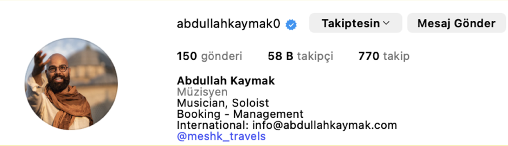
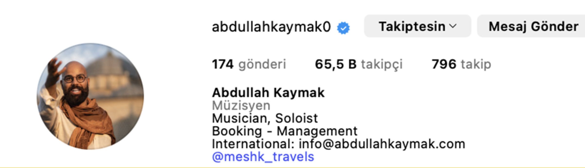
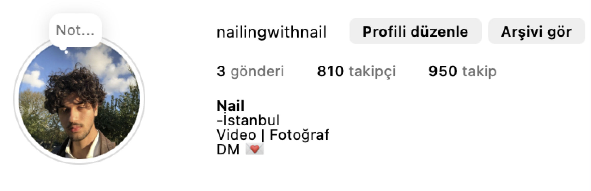
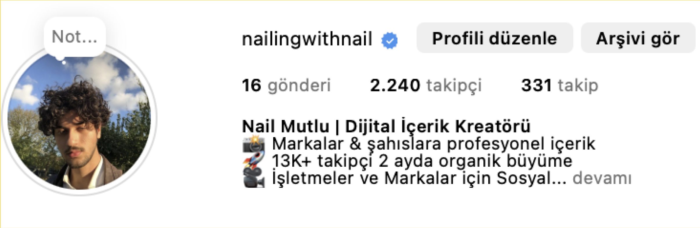
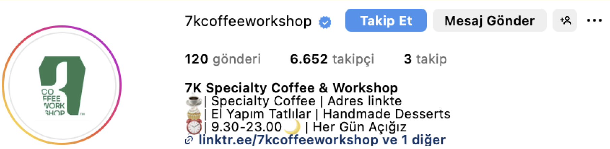
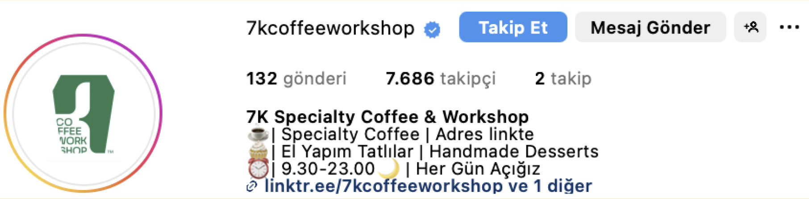
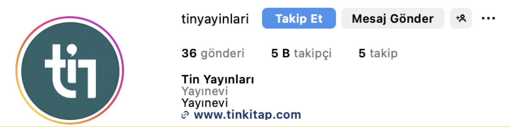
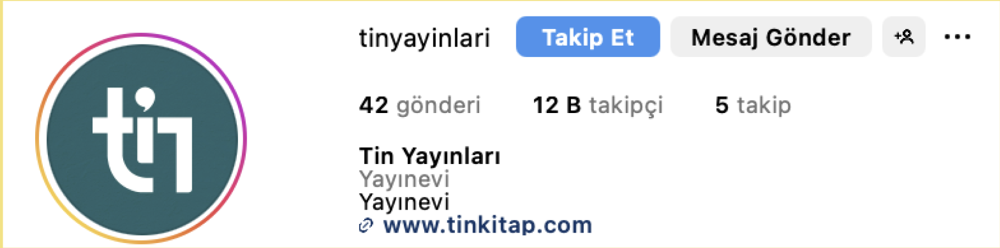

YOĞUN BİR İŞ SAHİBİ OLMANA RAĞMEN SOSYAL MEDYADA KİTLE KAZAN & SAT
Aylık sosyal medya yönetimi — yoğunluğunuzu üstleniyoruz.
ÖNCESİ & SONRASI
Müşterilerimizin performansları Yeni ve oturmuş hesaplarla çalışıyoruz.


Eski kayıtlardan sürekli olarak silen, uyumsuz içerik paylaşımı yapan ve sosyal medyada net olmayan müşteri, grafik takibi sonrası güven kazandı. Oturmuş içerik yapısı oluştu.


Sıfır hesaptan. Kısa sürede temel düzenli içerik çekimleri ve sosyal medya stratejisiyle markalaşma. Daha fazla büyümeye hazır, profesyonel ve etkili hale geldi.
NASIL İLERLİYOR?
#1. ARAŞTIRMA
Sosyal medyada senin alanındaki en iyi içerikleri / içerik üreticilerini bulup inceliyoruz.
#2. SCRIPT
Senin ve işinle ilgili yaptığımız araştırmalarla, bir aylık kısa video içeriklerinin senaryolarını (scriptini) yazıyoruz.
#3. ÇEKİM & EDİT
Senaryoları sen çekiyorsun. Videoları biz düzenliyoruz.
#4. PAYLAŞIM
Hazırlanan içerikleri, senin belirlediğin sosyal medya platformlarına (Instagram, TikTok, Facebook, YouTube, LinkedIn) yüklüyoruz.
DAHA FAZLA ÖNCESİ & SONRASI




SSS Sık sorulan sorular
Uygun Biri Olduğumu Nasıl Anlarım?
Eğer sosyal medyada büyümek ve satış yapmak isteyen bir işletme sahibiysen ve işe yarayan bir büyüme sistemine yatırım yapmaya hazırsan, o zaman bir görüşme ayırt.
Ama eğer yatırım yapmaya hazır değilsen, lütfen bu görüşmeyi ayırtma.
Kişisel Marka Oluşturmanın Amacı Ne?
Tüm bu insanlar ve işlerinin ortak noktası ne?
✓ Kylie Jenner – Kylie Cosmetics – En genç milyarder
✓ Rihanna – Fenty Beauty – 2.8 milyar dolar değerleme
✓ Ryan Reynolds – Mint Mobile – 1 milyar dolara satıldı
✓ Logan Paul – Prime – 3.1 milyar dolar değerleme
✓ The Rock – Teremana Tequila – 3.5 milyar dolar değerleme
Bu kişilerin hepsi oyunculuk, şarkıcılık, TV ya da sosyal medya sayesinde kişisel markalarını inşa etti.
İşim Neden Sosyal Medyada Olmalı?
✓ 4.26 milyar sosyal medya kullanıcısı var.
✓ İnsanların %54’ü ürün araştırmalarını sosyal medyada yapıyor.
✓ Satın alma kararlarının %71’i sosyal medyada veriliyor.
Ne Kadar Zamanımı Alır?
Biz iş yükünün büyük kısmını üstleniyoruz. Senin yapman gereken tek şey video çekmek çünkü bu senin kişisel markan.
Çekim süresi kişiden kişiye değişir ama çoğu kişi için ayda ortalama 4 saattir.
Ne Tür Sonuçlar Alabilirim?
✓ Bir müşterim kariyer stratejisti. 6 ayda 700 takipçiden 45.000’e çıktı.
✓ Kendi hesabımı 0’dan 100.000’e 7 ayda çıkardım.
Paralı reklamlara kıyasla sosyal medya ilk başta o kadar çekici görünmeyebilir.
Ama uzun vadede algılanan sonuçlar çok daha değerlidir.
Short Form Content Nedir?
60 saniye veya daha kısa süren, 9:16 formatındaki videolardır. Instagram Reels, TikTok, Youtube Shorts buna dahildir.
Hangi Sosyal Medya Platformlarıyla Çalışıyorsunuz?
Instagram, TikTok, Facebook, Youtube, Linkedin ve Twitter. Ama ağırlıklı olarak Instagram ve TikTok odaklı ilerliyoruz.
Sonuçlar Ne Kadar Sürede Görülür?
Videolar paylaşılmaya başlandığında sonuçlar da gelmeye başlar. Ortalama 3 hafta içinde etkiler başlar.
SOSYAL MEDYA YÖNETİMİ PAKETLERİ
GROW (BÜYÜME PAKETİ)
Aylık 15 Kısa Video (Shorts)
Karşılama / Değerlendirme Görüşmeleri
İçerik Araştırması
Senaryo Yazımı
Video Montajı
Paylaşım (Yükleme)
Hafta içi 7/24 E-posta Desteği
Aylık Performans Raporları
BONUS: Profil Optimizasyon Kontrolü
Başlamak isteyenler için ideal paket! Haftada ortalama 3 video ile istikrarlı büyümeye başla.
8.000 ₺
SCALE (ÖLÇEKLEME PAKETİ)
Aylık 20 Kısa Video (Shorts)
Karşılama / Değerlendirme Görüşmeleri
İçerik Araştırması
Senaryo Yazımı
Video Montajı
Paylaşım (Yükleme)
Hafta içi 7/24 E-posta Desteği
Aylık Performans Raporları
BONUS: Profil Optimizasyon Kontrolü
Haftada 5 içerikle markanı daha hızlı büyütmek isteyenler için.
12.000 ₺
DOMINATE (HAKİMİYET PAKETİ)
Aylık 30 Kısa Video (Shorts)
Karşılama / Değerlendirme Görüşmeleri
İçerik Araştırması
Senaryo Yazımı
Video Montajı
Paylaşım (Yükleme)
Hafta içi 7/24 E-posta Desteği
Aylık Performans Raporları
BONUS: Profil Optimizasyon Kontrolü
Markanı domine etmek isteyenler için, maksimum içerik & maksimum etki.